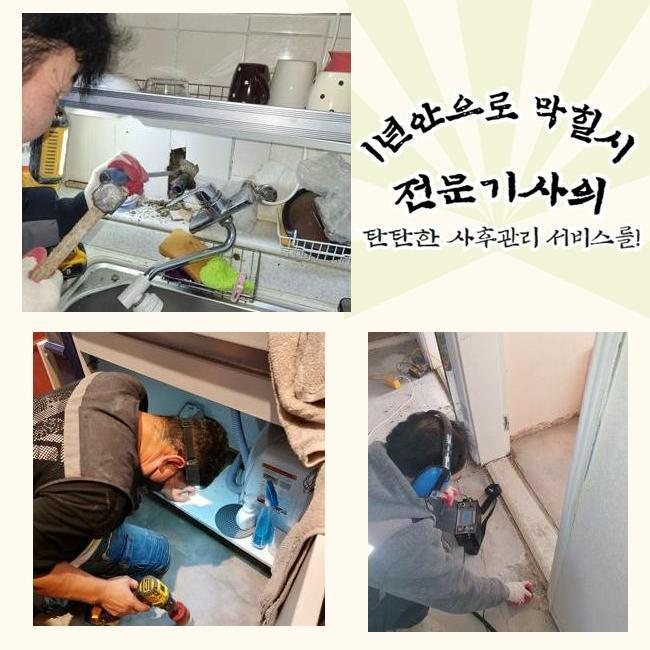
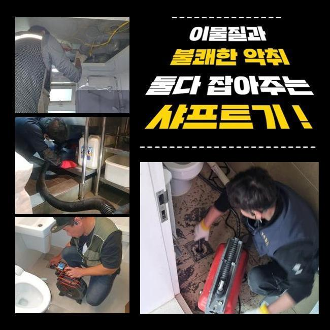
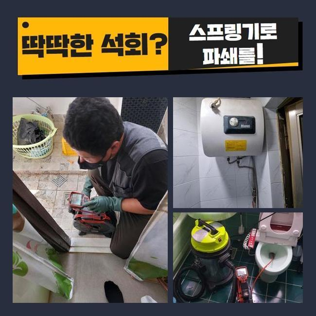
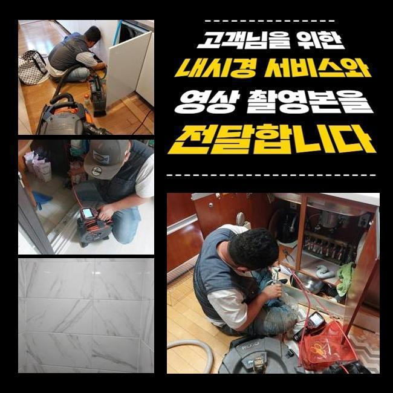
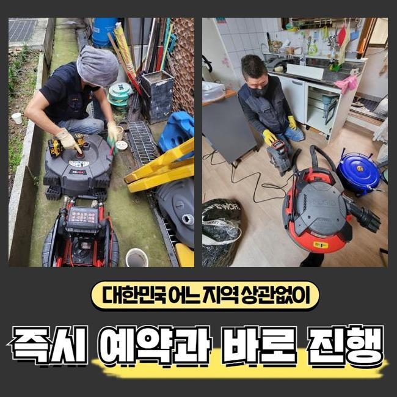
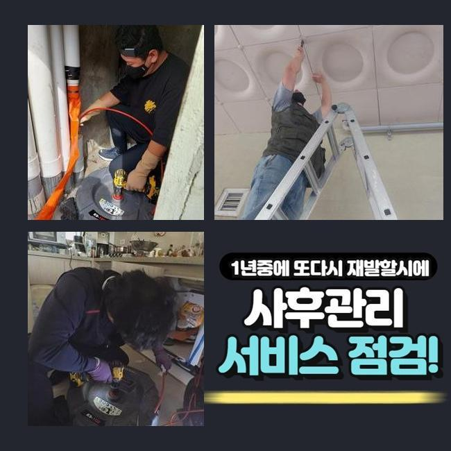
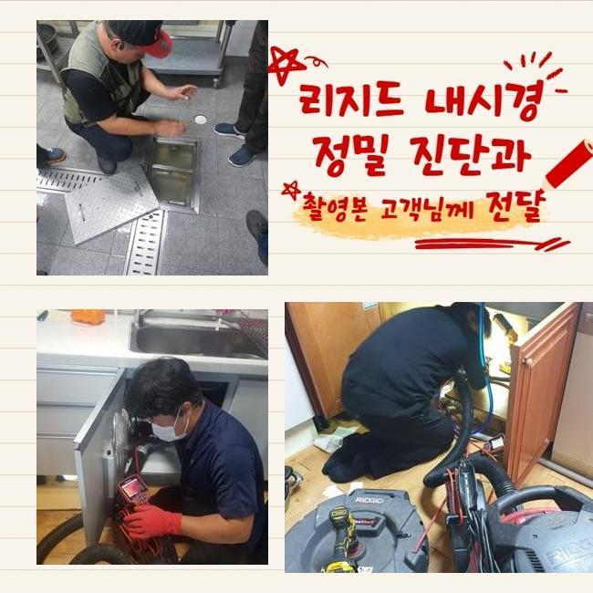

🏠 안산 고잔동싱크대배수구역류 초지동 오수맨홀청소 누수탐지
안산 지동 싱크대막힘 전문 시공 후기

📋 작업 개요
- 위치: 안산 지동, 지동, 안산
- 서비스 유형: 싱크대막힘, 배관막힘, 맨홀막힘, 누수수리, 역류해결, 뚫는업체, 배관청소, 고압세척, 설비공사, 악취차단
- 작업 일시: 2024. 12. 20. 3:33
- 업체명: 하수구수사대 (010-5615-2118)
🔍 문제 상황
안산 고잔동싱크대배수구역류 초지동 오수맨홀청소 누수탐지
세탁실이나 욕실은 우리 일상의 필수인 곳인데요
그래서 생활하다가 급작스럽게 물빠짐이 안된다면 그에 대한 파급력은 상당하겠죠
하지만 물내림이 원활하지 않은 사태를 무시하고 넘어가시는 케이스도 생각외로 많답니다
시간이 지난뒤 없어져버리거나 최소한 악화되지는 않겠다고 생각하기 때문이에요
그렇지만 현실적인 상황은 그것과 다르죠
이를 초창기에 적합하게 처치한다면 골치아픈 상황에 놓이지 않을 수 있답니다
배수성능이 약화되었다는건 관로의 어딘가에 물흐름을 막는 침전물이 존재한다는 방증이겠죠
이물들이 추가적으로 누적돼 한층더 힘겨운 막힘으로 진행되기전에 배관전문가에게 의뢰해서 진단을 적절하게 이행하고 순차적으로 청소해야 돼요
저번주에 해결한 곳을 신밀하게 말씀드리고자 하는데요
비슷한 증상으로 전문가를 찾으시는 이웃님들께 조금이나마 도움됐으면 하네요
저희들이 방문드렸던 지점은 빌딩 안에 위치한 음식점이에요
의뢰자께선 화장실과 주방시설에 이르기까지 점진적으로 물흐름이 멈췄다고 이야기하셨어요

🔎 원인 분석
💡 전문가 진단: 정밀 진단 장비를 사용하여 슬러지의 고착 여부를 판명하고 타격/세척 작업을 실시했습니다.
전적으로 고장나버린건 아니었으며 하루지나면 빠져나가는 모습을 보였기에 나중에 처리하자 생각하고 지속해서 쓰셨다고 합니다
그래서 결국에는 사태가 악화되어서 물흐름이 멈춰버렸고 오취와 역류증세까지 동반된 것이랍니다
배수관은 복잡하고 비좁은 길목으로 되어있어요
그러하기에 겉에서 볼땐 이물들이 얼마나 있나 알수가 없습니다
그렇기에 시공현장으로 이동하기 전에는 내시경cctv를 꼭 챙겨두어야 합니다
내시경기기의 끝단에는 소형방수카메라가 존재하는데요
그것을 이용해 파악이 힘겨운 배수관 안까지 세밀하게 파악가능하고 잔존물의 특성까지 알수있는 거예요
내시경기기로 관찰한 배수관 내부는 심각한 모습이었답니다
휴지조각 등을 포함해서 크고작은 잔재들이 누적되어 있었습니다
해당 잔존물들이 엉겨서 바위처럼 견고해진 상황이어서 비좁은 배수길을 차단하여 물빠짐이 올바르게 안되고 있었죠
이것을 방치해버린다면 사이즈를 증대시키면서 배관과 일체화될수도 있어요
그리된다면 한층 형편이 악화하는 것이기 때문에 신속하게 시공하기로 했어요
이럴 때에 쓰이는건 플렉스샤프트 체인입니다

🔧 작업 과정
좁디좁은 구멍에도 가볍게 진입가능한 장점이 있습니다
장비끝에는 노커라는 쇠붙이가 붙어서 빠른 속도로 움직이며 배수관안쪽에 잔존하는 굳어진 잔재들을 파쇄하여 줍니다
전면적으로 분쇄공정을 진행했는데요
전동드릴과 기계를 연결시킨뒤에 샤프트기계를 돌려 단단해진 이물들을 제거해나가기 시작했답니다
어떤곳에 잔존물들이 분포되어 있나 인지하여야 했기에 내시경설비를 이용한 조사도 동반진행 하였어요
이것을 통하여 적층량이 많은지점을 우선으로 공사한다면 한층 조속히 끝낼수가 있죠
배수관 안쪽면이 훼손되지않게 조심하며 잔재들만을 명확하게 겨냥하여 파쇄를 하였습니다
만일에 시공중에 파이프에 큰 하중을 가한다면 파열이 일어나서 누설증세가 발발할수도 있어요
그러므로 배관카메라나 플렉스샤프트 등의 기기가 구비되는 것이 중요하겠으나 전문가의 테크닉 역시 충분해야 할것입니다
찌꺼기가 집중된 구역을 청결하게 소제한뒤에 미미한 물질이라도 남아있지 않게 없애주었죠
그후 통수시험을 시행했어요
생활 하수를 한꺼번에 하수관으로 쏟아부었고 주변에 정체되거나 역류증세는 없나 진단했답니다
아무 문제가 없이 소멸되는걸 보았고 곧바로 근접한 배수설비로 건너가게 되었네요
여기서 정리한다면 바로 사용하기에는 괜찮겠으나 나중에 정체가 나타날 확률이 있어서였답니다
욕실의 가지배관과 결부된 횡주배관도 검사해서 막힘의 이유를 알아보기로 했죠
화장실 배수관에서 체증이 일어났을때 관계된 메인관로에까지 노폐물이 적체되었을 여지가 높으므로 전체적인 하수관 세척작업을 시행하는게 합당합니다
그렇기에 횡주관에 접근하여 관측을 시작하였고 초기에 생각한것과 비슷하게 관벽에 달라붙은 노폐물들을 포착할수가 있었어요
횡주배관 및 그와 연결된 파이프들까지 점차적으로 샤프트기기를 통해 청소했고 노폐물이 소멸된 청결한 관로를 목견하게 되었네요
플라스틱 등의 용해되기 어려운 것들은 생활하시다가 다시 쌓일 수 달려있어요
그러하기에 일년에 한두번은 배관기술자를 통하여 관리하시는게 좋답니다
더불어 일상중에 하수관을 보존하는 대책들도 쉬이 이해하시도록 친절히 안내드렸답니다


✅ 작업 완료
관로에 이상이 생긴다면 삶에 큰 고충을 마주하게 될것이니 심각한 고장을 목도하기 전에 주기적인 진단과 청소를 하는게 좋답니다
빨간날에도 요청시 방문드린다는 사항도 말씀드렸답니다
건축한 지 30년 정도된 건물에선 누수현상도 자주 발생되기에 해당 수리요청도 많아요
이에 바로 뚫음뿐만 아니라 누설수리도 한다는 사실을 안내해 드렸어요
어디에서 고장이 생겼고 며칠전부터 그런건지 문자나 전화로 알려주시면 더욱더 효율적으로 안내드릴수 있어요
또한 예약시간에 맞춰 배관전문가가 전용장비를 갖추고 내방해드리니 필요시 연락주시길 당부드려요




⚠️ 베란다 누수 및 방수 관리 방법
- ✅ 비가 많이 올 때 창틀 주변이나 아래층 천장에 얼룩이 생기는지 정기적으로 확인해 보세요.
- ✅ 우수관 주변 실리콘 마감이 들뜨거나 깨진 틈새가 있는지 손상 여부를 수시로 체크하세요.
- ✅ 베란다 바닥 타일의 줄눈(메지)이 소실되면 그 틈으로 물이 침투하여 누수가 유발됩니다.
- ✅ 누수 의심 증상 발견 시 방치하면 아래층 손실이 커지므로 즉시 전문가의 진단을 받으십시오.
💡 핵심 정리
- 확실한 장비 작업(내시경 점검 및 샤프트 스케일링)으로 원인을 뿌리 뽑습니다.
- 작업 후 1년 이내에 동일한 부위 재발 시 100% 무상 A/S 서비스를 보장합니다.
- 서울 · 경기 · 인천 전 지역에 24시간 언제든 긴급 출동할 수 있도록 항시 대기 중입니다.
❓ 자주 묻는 질문 (FAQ)
🚨 안산 지동 싱크대막힘 문제로 고민이신가요?
정확한 원인 진단과 확실한 시공으로 재발 없는 해결을 약속드립니다.
24시간 긴급 출동 | 서울 · 경기 · 인천 전지역 | 1년 내 재발 시 무상 A/S